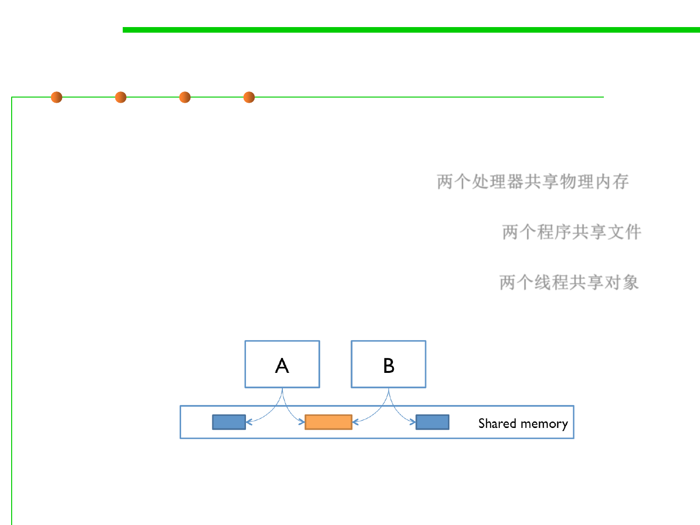

Shared memory
10.1 Concurrency and Thread-Safety
▪ Examples of the shared-memory model:
– A and B might be two processors (or processor cores) in the same
computer, sharing the same physical memory. 两个处理器共享物理内存
– A and B might be two programs running on the same computer, sharing a
common file system with files they can read and write. 两个程序共享文件
– A and B might be two threads in the same Java program (we’ll explain
what a thread is below), sharing the same Java objects. 两个线程共享对象